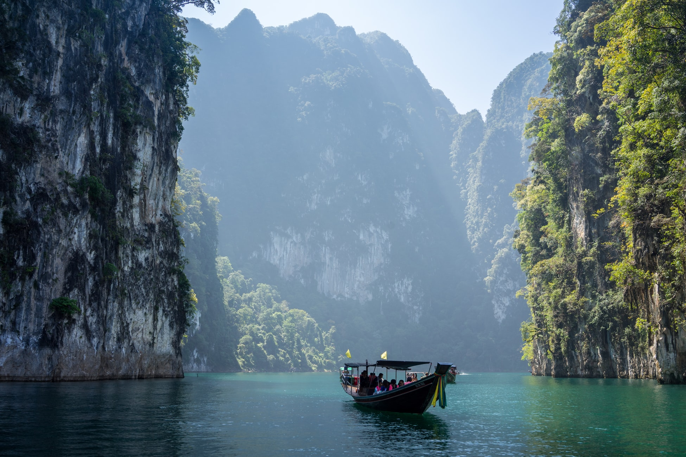
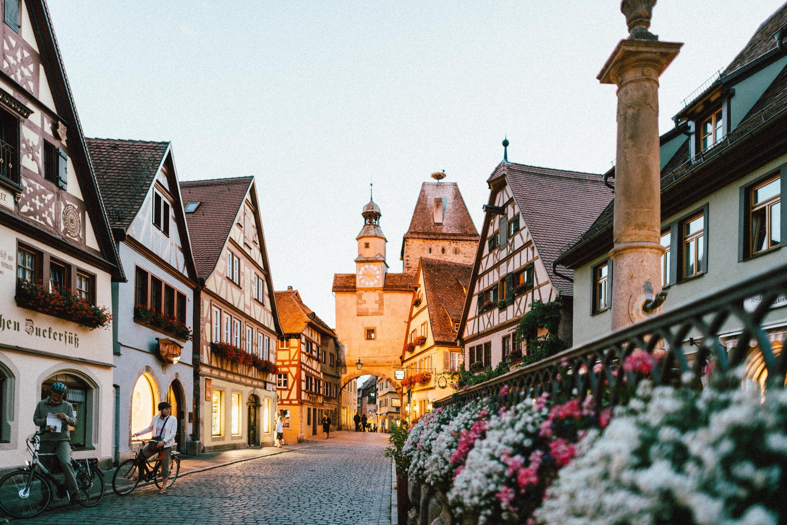

You need inspiration on where to go and what to do, but you know travel can have a major environmental impact.
Most travel sites just tell you of cool places, but we show you how to explore earth while treating it with respect.
Our database of travel sites, replete with tons of photos, reviews, and things to do will never fail you. Once you set up a consultation, we will survey you to help you find the adventure of a lifetime, one you never expected you'd need.
We stay in constant communication, sending you updates on your itinerary's progress as we create it. Once your trip starts, if you have any issues, our help line is staffed from 9-5 every day of the week, and we will resolve any itinerary, lodging, dietary, or other problems you're encountering.
Travel is always going to take a toll on the environment, so we provide a full comparison report of your impact when you use our consulting services versus what it would be if you didn't. We also calculate ways you can compensate for what impact you will have, from how many times you need to bike to work to make up for your CO2 emissions, to a monetary value you can donate to one of our recommended climate change fighting organizations.
